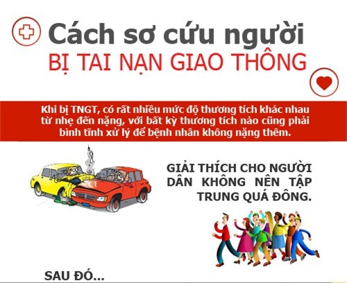
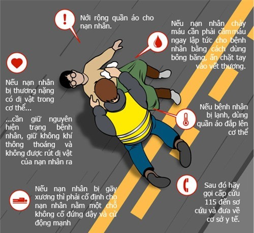
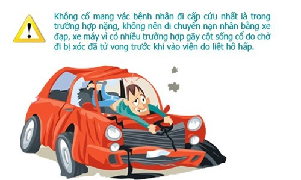

Thời gian vừa qua liên tục xảy ra nhiều vụ tai nạn giao thông thương tâm khiến nhiều người chết và bị thương. Mới đây nhất là vụ xe tải đâm vào đoàn người đi đám tang ở Hải Dương làm 8 người tử vong, nhiều người khác bị thương. TS.BS Dương Đình Toàn - Viện Chấn thương chỉnh hình, BV Việt Đức đã đưa ra những lời khuyên hữu ích cho người dân khi chứng kiến tai nạn ô tô có nhiều người thương vong để cứu được nhiều người trước khi đội cứu hộ có mặt.
Khi gặp một vụ tai nạn ô tô có nhiều người thương vong, bạn phải làm gì để có cơ hội cứu giúp được nhiều người trước khi đội cứu hộ có mặt? Nhiều người trong số chúng ta sẽ không biết phải làm gì tại hiện trường, làm như thế nào để vừa cứu được nạn nhân, vừa đảm bảo an toàn cho chính mình.
Trong những vụ tai nạn, những người có mặt đầu tiên tại hiện trường thường là những người không có chuyên môn y tế. Nếu họ chưa từng được tập huấn về kỹ năng sơ cứu cơ bản, cùng với sự mất bình tĩnh, run sợ, họ dễ tạo ra những sai sót đáng tiếc. Những sai sót đó có thể vô tình làm cho tình trạng nạn nhân trở nên trầm trọng hơn, hoặc có thể gây tai nạn cho chính họ.
Đứng trước tình cảnh có nhiều người thương vong trong một vụ tai nạn ô tô hay những thảm họa khác, trước hết cần phải bình tĩnh, tìm cách tiếp cận hiện trường và tiến hành khẩn trương những công việc có tính tuần tự sau đây:
Gọi cấp cứu 115 nơi gần nhất
Khi gọi cho trung tâm cấp cứu 115, cố gắng mô tả chi tiết, chính xác địa chỉ nơi xẩy ra tai nạn; sơ bộ có bao nhiêu người thương vong tại hiện trường; tình trạng của các nạn nhân ra sao… Không được tắt điện thoại cho đến khi cấp cứu 115 có mặt.

Đặt cảnh báo
Sau khi gọi 115, ngay lập tức đặt biển cảnh báo để tránh các cuộc va chạm của xe khác với hiện trường, đặc biệt là khi tai nạn xảy ra vào ban đêm. Đặt biển cảnh báo xa hiện trường tại nạn. Nếu bạn đi ô tô hoặc xe máy, hãy đỗ xe bên lề đường, tắt máy (điều này rất quan trọng, phòng cháy nổ tại hiện trường) và bật đèn nhấp nháy làm cảnh báo. Không sử dụng xe của bạn như một rào chắn.
Tiếp cận hiện trường
Khi tiếp cận hiện trường, tìm và cảnh báo những mối nguy hiểm như dây điện rơi, kính vỡ, xăng tràn, xe tiếp tục lăn… để đảm bảo an toàn cho bạn, nạn nhân, cũng như những người cứu hộ. Nếu bạn đang hút thuốc lá, phải dập tắt thuốc lá trước khi tiếp cận hiện trường. Nếu xe bị nạn đang nổ máy, cố gắng tắt máy, ngắt nguồn phóng điện đề phòng chảy nổ. Phải đảm bảo thật sự an toàn cho bạn mới tiến hành tiếp cận người bị nạn. Nếu cần giúp sức, bạn đứng vẫy xe, yêu cầu những xe đang đi tới gần dừng lại cùng hỗ trợ sơ cứu người bị nạn.
Tiếp cận và sơ cứu người gặp nạn
Tìm kiếm các nạn nhân bị thương. Không di chuyển nạn nhân trừ khi họ đang trong tình huống nguy hiểm. Trong tai nạn ô tô, nạn nhân rất dễ bị gãy xương, chấn thương cột sống, đặc biệt là cột sống cổ, nếu di chuyển mà không được bất động sẽ làm cho tổn thương của họ trở nên trầm trọng hơn, dễ gây sốc, nguy hiểm đến tính mạng.
Nếu gặp tình huống nguy hiểm tại hiện trường (ví dụ nguy cơ chập điện, cháy nổ…), bắt buộc phải di chuyển nạn nhân ra khỏi hiện trường. Khi đó cố gắng tránh các động tác làm xoắn vặn, gập cổ, gập người. Tốt nhất là có nhiều người hỗ trợ để giữ thẳng lưng, cổ và chân trong quá trình di chuyển. Nếu nạn nhân gãy xương chi gây biến dạng gập góc, cố gắng giữ nguyên tư thế biến dạng khi di chuyển.
Khi di chuyển nạn nhân ra khỏi vùng nguy hiểm, trong điều kiện nào đó (nền đất, bãi cỏ…) nên kéo nạn nhân hơn là cố gắng bế nổi nạn nhân. Cách tốt nhất để kéo nạn nhân là túm lấy cổ áo hoặc ống quần.

Kiểm tra tình trạng nạn nhân
Khi tiếp cận được người bị nạn, đầu tiên hỏi họ tên họ là gì, nếu người bị nạn trả lời được thì họ còn tỉnh táo, nếu không thấy nạn nhân phản ứng gì, cấu véo nhẹ lên người họ xem họ có đáp ứng không. Khi cấu véo không đáp ứng, cho thấy nạn nhân đang hôn mê, có thể đang trong tình trạng nguy kịch.
Kiểm tra đường thở
Quan sát đường thở, nếu có đất cát, răng giả và các dị vật khác ở miệng, mũi gây cản trở hô hấp, dùng tay móc lấy dị vật làm thông thoáng đường thở. Bằng cách quan sát chuyển động của lồng ngực hoặc áp má lên gần sát mũi nạn nhân, nếu thấy nạn nhân không thở, hoặc thở bất thường, tiến hành ngay hô hấp nhân tạo (hà hơi thổi ngật, ép tim ngoài lồng ngực).
Nếu bạn chưa từng được học cách hô hấp nhân tạo thì không nên làm, mà đề nghị người đi cùng biết làm thực hiện, hoặc gọi 115 yêu cầu hướng dẫn, cho đến khi đội cấp cứu đến. Nếu nạn nhân hôn mê và mũi, miệng có nhiều máu, chất nôn, nhẹ nhàng nghiêng đầu nạn nhân về một bên phòng khi máu, chất nôn tràn vào đường thở.
Tìm và băng bó, cầm máu các vết thương
Chảy máu là nguyên nhân chính gây nên tình trạng sốc, do đó bằng mọi cách bạn phải cầm máu bằng được cho nạn nhân. Dùng miếng vải sạch gập thành nhiều lớp, đặt lên miệng vết thương. Nếu nạn nhân tỉnh, bảo họ dùng tay tự ép chặt vào miếng vải đó và bạn có thời gian sơ cứu cho những nạn nhân khác nặng hơn.
Nếu nạn nhân trong tình trạng nặng, dùng khăn, vải… băng ép chặt lên miếng vải. Khi miếng vải thấm nhiều máu, không nên bỏ ra để thay thế miếng vải khác, mà nên đệm thêm lớp vải và quấn thêm nhiều vòng băng.
Nếu máu vẫn chảy nhiều và không có bằng chứng của gãy xương, dùng tay ép chặt lên vết thương, đồng thời nâng chân nạn nhân lên cao hơn ngực, như thế sẽ giảm được áp lực máu trong lòng động mạch, sẽ hạn chế chảy máu qua vết thương.
Nếu chi thể bị dập nát hoặc đứt rời, nhanh chóng ga rô cầm máu ngay trên phần tổn thương. Không ga rô lên cao vì nguy cơ hoại tử phần chi lành.
Khi vết thương vùng chi gây chảy máu thành tia do tổn thương động mạch lớn, nên ga rô cầm máu, đồng thời ghi nhớ thời gian ga rô để báo lại đội cấp cứu, nhớ nới ga rô sau mỗi 30 phút tránh hoạt tử chi.
Trong mọi trường hợp tiếp xúc trực tiếp với máu nạn nhân, tốt nhất nên có sự cách ly bằng cách đeo găng tay cao su, túi ni lông hoặc các vật liệu không thấm nước khác. Xin nhắc lại, không di chuyển nạn nhân trừ khi có tình huống nguy hiểm, cho đến khi đội cấp cứu đến.

Phát hiện được các dấu hiệu sốc
Sốc xảy ra khi hệ thống tuần hoàn của nạn nhân không cung cấp đủ máu cho cơ thể, đặc biệt là não. Sốc đe dọa đến tính mạng người bị nạn. Các dấu hiệu của sốc dễ nhận biết như tái nhợt, vã mồ hôi; khát nước, nôn, buồn nôn; tay chân lạnh; lơ mơ, kích thích hoặc thờ ơ; thở nhanh; mạch nhanh nhỏ… Bất kỳ chấn thương nghiêm trọng nào cũng có thể dẫn đến tình trạng sốc, và sốc có thể “giết chết” nạn nhân ngay cả khi chấn thương không quá nghiêm trọng nhưng không được sơ cứu đúng đắn.
Khi nạn nhân bị sốc, hãy đặt họ nằm xuống, nới lỏng quần áo, nâng cao hai chân lên quá đầu nếu làm như vậy không ảnh hưởng đến cốt sống và vết thương. Nếu trời lạnh, ủ ấm bằng cách đắp chăn hay áo khoác lên người nạn nhân. Động viên, trấn an người gặp nạn cũng đóng vai trò rất quan trọng, giúp nạn nhân đỡ lo âu, không hoảng loạn.
Những việc không nên làm:
– Di chuyển nạn nhân khi tình trạng chưa ổn định, chi gãy, cột sống tổn thương chưa được cố định.
– Vận chuyển nạn nhân đi cấp cứu bằng xe máy, xe đạp hay cõng lưng
– Cố lấy bỏ những vật nhọn đang găm sâu vào cơ thể, đặc biệt bụng, ngực, đầu.
– Cho thức ăn, chất lỏng vào miệng nạn nhân khi nạn nhân đang trong trạng thái hôn mê
– Ép tim khi có gãy xương ức, xương sường, vết thương ngực hở
Chỉ tiến hành hỗ trợ, sơ cứu nạn nhân nếu bạn chắc chắn rằng bạn sẽ không gặp nguy hiểm. Các động tác hỗ trợ sơ cứu phải hết sức thận trọng để ngăn ngừa những tổn thương thứ phát, khiến cho tình trạng nạn nhân nặng hơn.
Với thái độ bình tĩnh, bằng các động tác sơ cứu đúng đắn, bạn có thể cứu sống được nhiều người khi gặp tình huống khẩn cấp như tại nạn ô tô hay các tai nạn gây thương vong hàng loạt khác.
(Theo Sức khỏe đời sống)